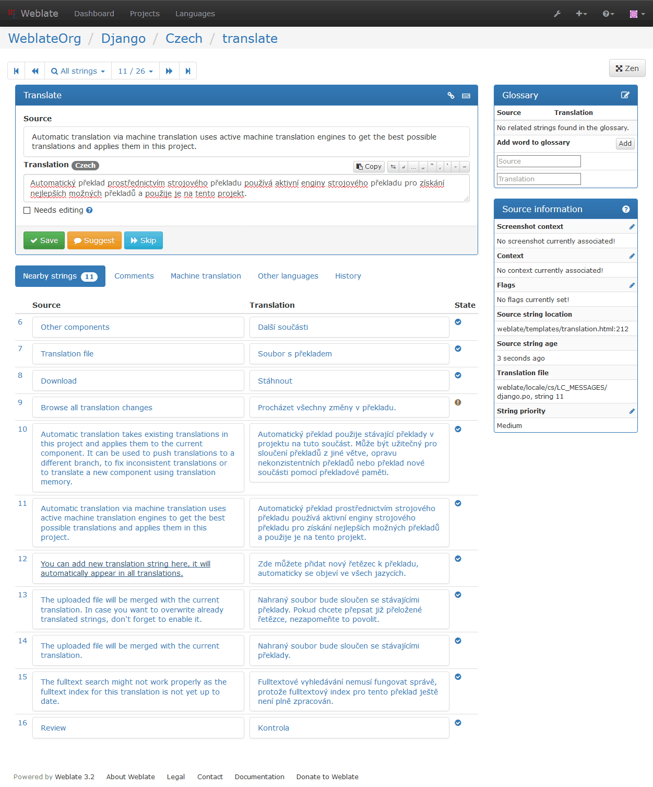
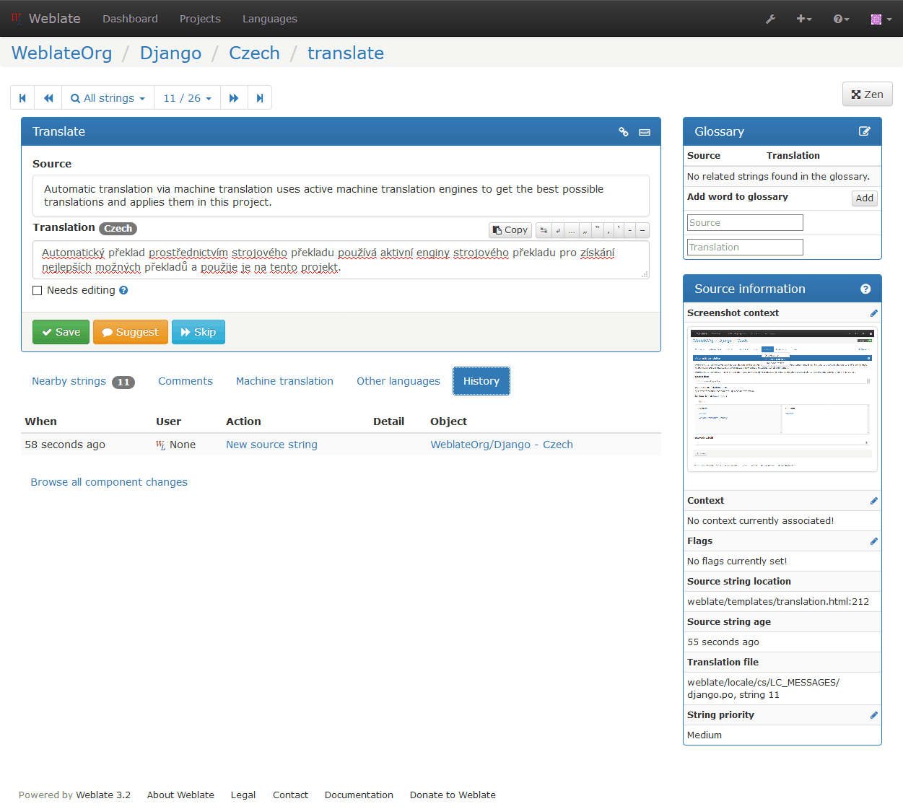
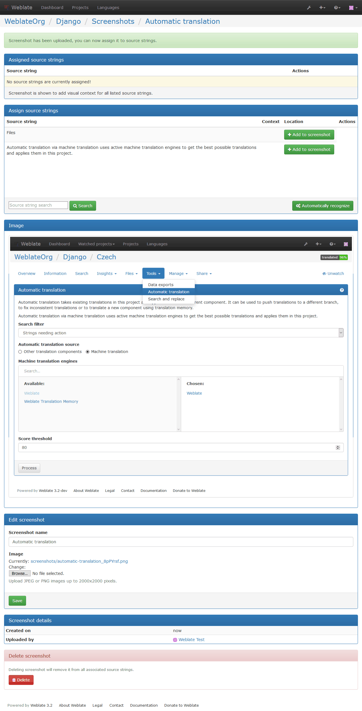

Translation process¶
提案の投票¶
バージョン 1.6 で追加: This feature is available since Weblate 1.6.
In default Weblate setup, everybody can add suggestions and logged in users can accept them. You might, however, want to have more eyes on the translation and require more people to accept them. This can be achieved by suggestion voting. You can enable this on コンポーネント設定 configuration by Suggestion voting and Autoaccept suggestions. The first one enables voting feature, while the latter allows you to configure threshold at which a suggestion will automatically get accepted (this includes a vote from the user making the suggestion).
注釈
Once you enable automatic accepting, normal users lose the privilege to directly save translations or accept suggestions. This can be overridden by Can override suggestion state privilege (see Access control).
You can combine these with Access control into one of following setups:
- Users can suggest and vote for suggestions, limited group controls what is accepted - enable voting but not automatic accepting and remove privilege from users to save translations.
- Users can suggest and vote for suggestions, which get automatically accepted once the defined number of users agree on this - enable voting and set desired number of votes for automatic accepting.
- Optional voting for suggestions - you can also only enable voting and in this case it can be optionally used by users when they are not sure about translation (they can suggest more of them).
Translation locking¶
To improve collaboration, it is good to prevent duplicate effort on
translation. To achieve this, translation can be locked for a single translator.
This can be either done manually on translation page or is done automatically
when somebody starts to work on translation. The automatic locking needs to be
enabled using AUTO_LOCK.
The automatic lock is valid for AUTO_LOCK_TIME seconds and is
automatically extended on every translation made and while user has opened
translation page.
A user can also explicitly lock a translation for LOCK_TIME seconds.
Additional information on source strings¶
Weblate allows you to enhance the translation process with information available in the translation files. This includes strings prioritization, check flags or providing visual context. All these features can be set on the Reviewing source strings:

You can also access this directly from the translating interface when clicking on the edit icon next to Screenshot context, Flags or String priority:
Strings prioritization¶
バージョン 2.0 で追加.
You can change string priority, strings with higher priority are offered first for translation. This can be useful for prioritizing translation of strings which are seen first by users or are otherwise important.
翻訳フラグ¶
バージョン 2.4 で追加.
バージョン 3.3 で変更: Previously this was called Quality checks flags, but as it no longer configures only checks, the name was changed to be more generic.
Default set of translation flags is determined from the translation コンポーネント設定 and the translation file. However, you might want to customize this per source string and you have the option here.
参考
Visual context for strings¶
バージョン 2.9 で追加.
You can upload a screenshot showing usage of given source string within your application. This can help translators to understand where it is used and how it should be translated.
The uploaded screenshot is shown in the translation context sidebar:
In addition to Reviewing source strings, screenshots have a separate management interface. You can find it under Tools menu. This allows you to upload screenshots, assign them to source strings manually or using OCR.
Once screenshot is uploaded, you will be presented following interface to manage it and assign to source strings:
